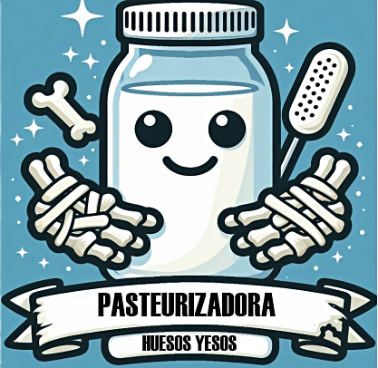

Somos una destacada pasteurizadora especializada en procesar leche de productores independientes y haciendas lecheras. Garantizamos altos estándares de calidad para ofrecer un producto final excepcional, generando confianza y credibilidad en el mercado
La adquisición de productos de la más alta calidad refleja nuestro compromiso con la excelencia y la satisfacción de los clientes. Nuestro proceso meticuloso de evaluación y pruebas garantiza que cada artículo cumpla con nuestros rigurosos estándares, superando expectativas y asegurando la conformidad deseada
Nuestro compromiso con la calidad se refleja en cada etapa, incluida la entrega final. Nos dedicamos a asegurar que cada producto mantenga su frescura y calidad distintiva al llegar a manos de nuestros clientes. Nuestro proceso de entrega ágil y eficiente garantiza la puntualidad y comodidad para nuestros clientes, priorizando su satisfacción y superando constantemente sus expectativas